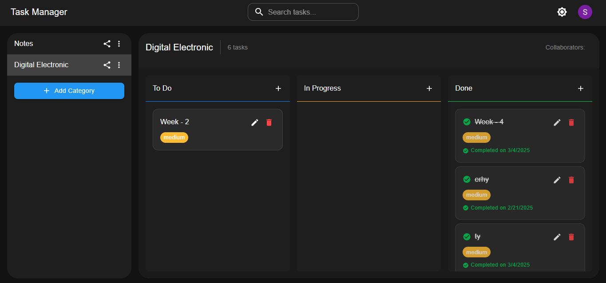

I am a B.Tech student in Computer Science Engineering (CSE)
specializing in Artificial Intelligence & Machine Learning
(AI & ML).
With a strong passion for technology, I thrive on solving complex problems using AI, automation, and software development. I constantly explore machine learning, deep learning, NLP, and web technologies to build intelligent and scalable applications. My expertise lies in AI-driven solutions, full-stack web development. I enjoy experimenting with cutting-edge AI models, working on real-world projects, and contributing to the tech community. I believe in continuous learning, innovation, and staying ahead in the evolving world of AI & ML. Beyond AI, I have a keen interest in ethical hacking, cloud computing, and automation. My approach to technology is practical—I learn by building, experimenting, and refining my skills through hands-on projects.I actively participate in hackathons, freelancing, and content creation. Through my YouTube channel (AI Dugeoun), I create AI-generated videos, educating others about science, technology, and AI innovations.I aim to use my knowledge and skills to develop AI-powered solutions, contribute to open-source projects, and make a meaningful impact in the tech world.

Task Manager App: Created a React-based to-do web app with real-time collaboration.
Task Manager App: Created a React-based to-do web app with real-time collaboration.
Task Manager App: Created a React-based to-do web app with real-time collaboration.
View All Archive Projects.